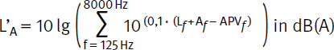
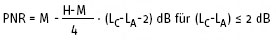
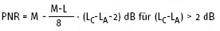
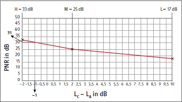
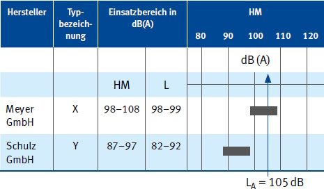

Die nachstehend beschriebenen Auswahlmethoden sind Bestandteil von DIN EN 458 "Gehörschützer - Empfehlungen für Auswahl, Einsatz, Pflege und Instandhaltung - Leitfaden".
Es wird der am Ohr wirksame A-bewertete Schalldruckpegel L’A bestimmt, wenn der Gehörschützer getragen wird. Bei der Ermittlung der Expositionspegel ist bei zeitlich schwankenden Geräuschen grundsätzlich der äquivalente Dauerschalldruckpegel LAeq und für die Oktavband-Methode das äquivalente Dauerschallspektrum Loct,eq zugrunde zu legen.
Bei der Auswahl ist zu unterscheiden:Dies kann bei der Kombination von Tätigkeiten mit sehr hohen Pegeln und sehr niedrigen Pegeln mit der Notwendigkeit zur Kommunikation dazu führen, dass ein einzelner Gehörschützer nicht alle Anforderungen erfüllt. In diesem Fall können unterschiedliche Gehörschützer oder eine Kombination aus niedrigschalldämmenden Stöpseln und einem Kapselgehörschutz, der nur in den lauten Phasen getragen wird, erforderlich sein.
Der L’EX,8h darf den maximal zulässigen Expositionswert von 85 dB(A) nicht überschreiten.
Ziel der Auswahl ist das Erreichen eines Restschalldruckpegels von 70 bis 80 dB(A) unter dem Gehörschutz, siehe Tabelle 5. Zu hohe Schalldämmung kann zu Verständigungsproblemen und Isolationsgefühl (Überprotektion) führen. Um die daraus resultierende Ablehnung der Benutzung zu vermeiden, sollte dies ab einem Restschalldruckpegel von L’Aeq < 70 dB(A) überprüft werden.
Tabelle 5 Schema zur Beurteilung der Schutzwirkung
| Restschalldruckpegel in dB(A) | Restspitzenschalldruckpegel in dB(C) | Beurteilung der Schutzwirkung |
| > 85 | > 137 | nicht zulässig |
| > 80 | > 135 | nicht empfehlenswert |
| 70 - 80 | ≤ 135 | empfehlenswert |
| < 70 | - | * |
* Verständigung und Isolationsgefühl prüfen
Für die Auswahl des Gehörschützers sollten der nach §§ 2, 3, 4 der LärmVibrationsArbSchV ermittelte Tages-Lärmexpositionspegel und der Spitzenschalldruckpegel verwendet werden.
Nach TRLV Lärm gilt:
Dieses aufwendige Verfahren wird im Einzelfall angewendet, z. B. bei der Gehörschutzauswahl für Personen mit Hörminderung.
Die Berechnung des am Ohr wirksamen Lärmexpositionspegels nach der Oktavband-Methode erfolgt gemäß folgender Gleichung:

| mit: | f | Mittenfrequenz des Oktavbandes | |
| Lf | Oktavband-Schalldruckpegel des Geräusches | ||
| Af | Frequenzbewertung A, entsprechend der DIN EN 61672-1 | ||
| APVf | Wert der angenommenen Schutzwirkung des Gehörschützers |
Beispiel:
| f/Hz | 125 | 250 | 500 | 1000 | 2000 | 4000 | 8000 |
| Lf /dB | 84 | 86 | 88 | 97 | 99 | 97 | 96 |
| Af /dB | - 16,1 | - 8,6 | - 3,2 | 0 | + 1,2 | + 1,0 | - 1,1 |
| Lf +Af /dB | 67,9 | 77,4 | 84,8 | 97,0 | 100,2 | 98,0 | 94,9 |
| APVf /dB | 7,0 | 11,4 | 15,7 | 19,4 | 24,4 | 32,6 | 29,7 |
| L’Af /dB | 60,9 | 66,0 | 69,1 | 77,6 | 75,8 | 65,4 | 65,2 |
L’A = 80,6 dB(A) ≈ 81 dB(A)
Der unter dem Gehörschützer wirksame Schalldruckpegel ist nach Tabelle 5 als "nicht empfehlenswert, aber zulässig" zu beurteilen. Diese Methode kann nur bei qualifizierter Benutzung von Gehörschützern (siehe Anhang 1, Ziffer 2) verwendet werden.
Die Schalldämmungswerte H, M und L in Verbindung mit den Messergebnissen des A- und C-bewerteten Schalldruckpegels (bestimmt aus äquivalenten Dauerschalldruckpegeln) des Geräusches werden dazu benutzt, um die vorhergesagte Minderung des Geräuschpegels (PNR) zu berechnen. Dieser Wert wird dann von dem festgestellten A-bewerteten Schalldruckpegel subtrahiert, um so den bei aufgesetztem Gehörschutz für das Ohr wirksamen, A-bewerteten Schalldruckpegel (L’A) zu bestimmen. Die H, M, L-Werte werden von der Herstellfirma angegeben. Diese Methode wird bei qualifizierter Benutzung verwendet.
3.1 Rechnerische Bestimmung

und

Der Restschallpegel ergibt sich dann aus
L’A = LA - PNR
3.2 Graphische Bestimmung
Beispiel:
| - | Geräuschquelle: | Hochfrequenz-Handschleifmaschine, |
| - | Tätigkeit: | Putzschleifen von kleinen Pumpengehäusen, |
| - | LA = 102 dB; | LC = 101 dB |

Abb. 14 Graphische Bestimmung der vorhergesagten Minderung des Geräuschpegels (PNR) nach HML-Methode
Bewertung: Die Schutzwirkung des ausgewählten Gehörschützers ist nach Tabelle 5 als "empfehlenswert" einzuschätzen.
4.1 HML-Check mit Liste der Gehörschützer aus der IFA-Gehörschützer-Datenbank
Durch Hörprobe und unter Beachtung von Tabelle 6 und 7 wird das Geräusch als mittel- bis hochfrequent oder als tieffrequent eingestuft. Unter Berücksichtigung des ermittelten Schalldruckpegels (LA) wird mit der Liste der Gehörschützer aus der IFA-Gehörschützer-Datenbank (siehe Anhang 12, "Alle dem IFA gemeldeten Gehörschützer mit EU-Baumusterprüfbescheinigung") dann die Gehörschutz-Auswahl getroffen.
Tabelle 6 Geräuschquellen der Geräuschklasse HM - mittel- bis hochfrequent mit LC - LA ≤ 5 dB
| Geräuschquellen der Geräuschklasse HM - mittel- bis hochfrequent mit LC - LA ≤ 5 dB | |
|
|
Tabelle 7 Geräuschquellen der Geräuschklasse L - überwiegend tieffrequent mit LC - LA > 5 dB
| Geräuschquellen der Geräuschklasse L - überwiegend tieffrequent mit LC - LA > 5 dB | |
|
|
Beispiel:
1. Schritt: Ermittlung am Arbeitsplatz
2. Schritt: Bestimmung der Geräuschklasse
Unter Beachtung der Tabelle 6 wird das Arbeitsgeräusch als mittel- bis hochfrequent (HM) eingestuft.
3. Schritt: Auswahl geeigneter Gehörschützer mit der Liste der Gehörschützer aus der IFA-Gehörschützer-Datenbank, siehe Abbildung 15.

Abb. 15 Beispiel (Ausschnitt) aus der IFA-Positivliste für Gehörschutz
Bewertung: Der Lärmexpositionspegel liegt innerhalb des empfohlenen Einsatzbereiches des Gehörschützers X, aber außerhalb des Einsatzbereiches des Gehörschützers Y. Der Gehörschützer X ist hinsichtlich der Schalldämmung für den Arbeitsplatz Schmiedehammer geeignet. Der Gehörschützer Y ist für diesen Arbeitsplatz nicht geeignet.
4.2 HML-Check mit der Gehörschützer-Auswahlhilfe des IFA
Die Gehörschützer-Auswahlhilfe bietet die Möglichkeit, Geräuschklasse und Schallpegel einzugeben und damit geeignete Gehörschützer auszuwählen. Zusätzlich kann die Auswahl durch die Angabe von Kriterien (z. B. Signalhörbarkeit, medizinische Faktoren) präzisiert werden. Bezugsquelle siehe Anhang 10.
4.3 HML-Check mit bekanntem H, M oder L-Wert
Der Schalldruckpegel kann der Tages-Lärmexpositionspegel oder der mit der Tätigkeit verbundene äquivalente Dauerschalldruckpegel sein.
Wenn die Geräuschklassen im Laufe einer Arbeitsschicht wechseln, sollte der Tages-Lärmexpositionspegel zur Beurteilung verwendet werden.
Beispiel: Gehörschützer mit M = 24 dB und L = 18 dB
Wird keine Unterweisung zur qualifizierten Benutzung durchgeführt, sind die H-, M-, L-Werte durch Subtraktion der jeweiligen Korrekturwerte Ks an die tatsächliche Schalldämmung in der Praxis anzupassen.
Die Schalldämmung eines Gehörschützers ist dann als gut zu bewerten, wenn die für das Gehör wirksamen Schalldruckpegel bei getragenem Gehörschützer
1. L’pC,peak ≤ 135 dB(C) und
2. 70 dB(A) ≤ L’EX,8h ≤ 80 dB(A)
sind.
Tabelle 8 und Tabelle 9 zeigen Beispiele für mittel- bis hochfrequente und tieffrequente Impuls-/Schlaggeräusche. Die genannten Werte sind als Richtwerte zu betrachten.
Tabelle 8 Beispiele für hoch- und mittelfrequente Impuls-/Schlaggeräusche (LCFmax - LAFmax ≤ 5 dB)
| Lärmquelle | LpC,peak in dB |
| Automatik-Gewehr (am Ohr des Schützen) | 170 |
| Pistole (am Ohr des Schützen) | 160 |
| Schreckschuss-Pistole (am Ohr des Schützen) | 157 |
| Feuerwerkskörper (in 2 m Entfernung) | 167 |
| Druckluft-Nagler (am Arbeitsplatz) | 130 |
| schwere Schmiedehämmer (am Arbeitsplatz) | 145 |
| Richtschlag (am Arbeitsplatz) | 140 |
| 200 t Presse (am Arbeitsplatz) | 140 |
| Tafelschere (am Arbeitsplatz); Fallen schwerer Bleche | 140 |
Anmerkung: Die genannten Zahlenwerte stellen nur Beispiele für typische Spitzenschalldruckpegel dar. Die tatsächlich auftretenden Spitzenschalldruckpegel können höher oder niedriger sein.
Tabelle 9 Beispiele für tieffrequente Impuls-Geräusche (LCFmax - LAFmax > 5 dB)
| Lärmquelle | LpC,peak in dB |
| Explosion von 10 kg TNT auf dem Erdboden in 300 m Entfernung | 151 |
| Kanone 20 mm (ca. 10 m Entfernung) | 162 |
| Kanone 105 mm (ca. 10 m Entfernung) | 168 |
| Richtarbeiten an großen Gehäusen aus dünnen Blechen | 144 |
Anmerkung: Die genannten Zahlenwerte stellen nur Beispiele für typische Spitzenschalldruckpegel dar. Die tatsächlich auftretenden Spitzenschalldruckpegel können höher oder niedriger sein.
Die nachstehende Methode für die Abschätzung einer ausreichenden Schutzwirkung setzt eine qualifizierte Benutzung der Gehörschützer voraus.
Kann diese nicht garantiert werden, sind die entsprechenden Praxisabschläge zu berücksichtigen (siehe Anhang 1, Ziffer 1).
Die Ermittlung von L’pC,peak und L’EX,8h wird mit dem Schalldämmwert M (für hoch-/mittelfrequente Geräusche) oder L (für tieffrequente Geräusche) des Gehörschützers durchgeführt.
L’pC,peak = LpC,peak - M oder
L’pC,peak = LpC,peak - (L - 5 dB)
L’EX,8h = LEX,8h - M oder
L’EX,8h = LEX,8hh - L
Bei der Einwirkung von tieffrequenten Spitzenschalldruckpegeln, zum Beispiel Explosionsgeräuschen nach Tabelle 9, treten zusätzliche Leckagen am Gehörschutz aufgrund der Druckwelle auf.
Es kann jedoch davon ausgegangen werden, dass die schädigende Wirkung solcher Geräusche geringer ist als die von mittel- und hochfrequenten Geräuschen wie in Tabelle 8.
Beispiel: Gehörschützer mit M = 19 dB
Arbeitsplatz am schweren Schmiedehammer: LpC,peak = 148 dB(C) und LEX,8h = 101 dB(A), Geräuschklasse mittel- bis hochfrequent
1. L’pC,peak = LpC,peak - M = 129 dB ≤ 135 dB(C)
2. L’EX,8h = LEX,8h - M = 82 dB ≤ 85 dB(A)
Die unter dem Gehörschützer wirksamen Schalldruckpegel L’pC,peak und L’EX,8h können als "nicht empfehlenswert, aber zulässig" bewertet werden. Die Auswahl des Gehörschützers wird hier vom Tages-Lärmexpositionspegel bestimmt. Nur wenn das Gesamtgeräusch von einzelnen Impulsspitzen (LpC,peak ≥ 135 dB) dominiert wird, d. h. der Tages-Lärmexpositionspegel verhältnismäßig klein ist, ist der Spitzenwert des C-bewerteten Schalldruckpegels für die Auswahl ausschlaggebend.